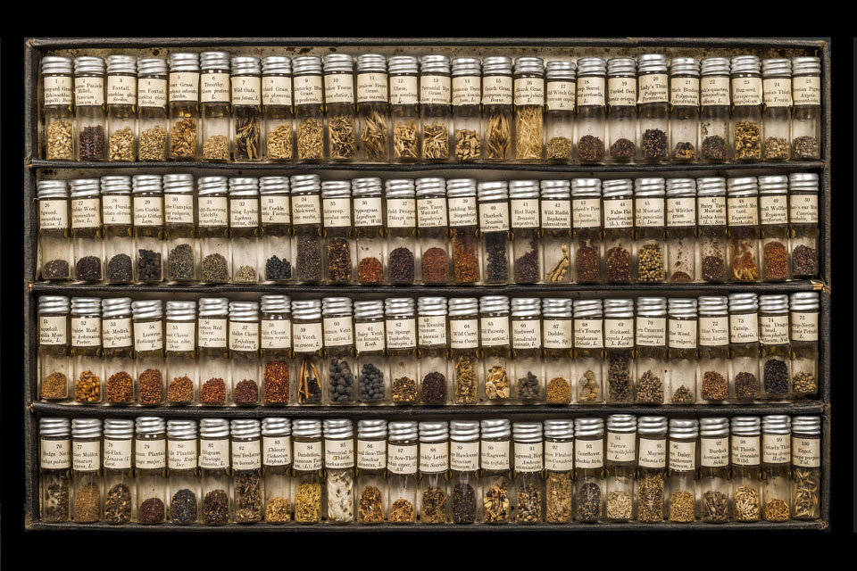
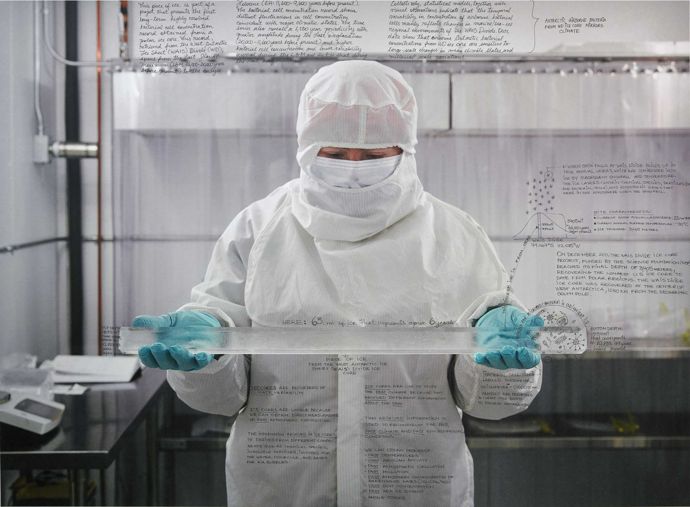
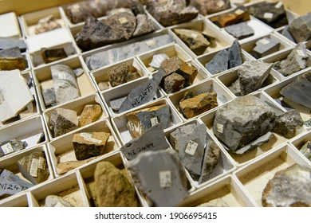
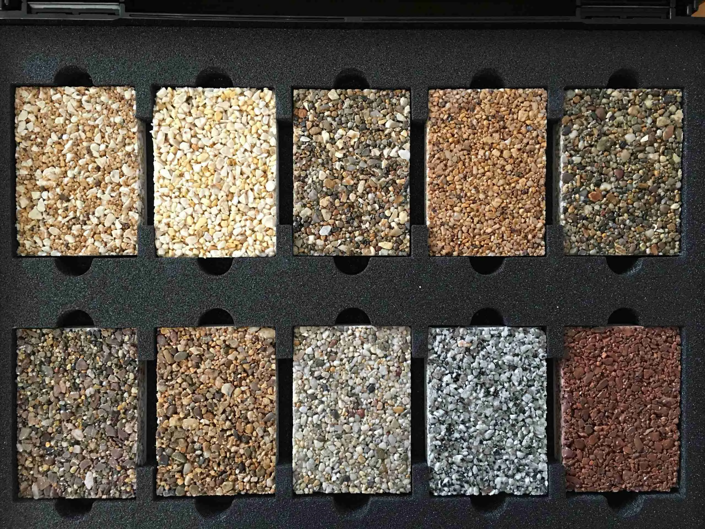
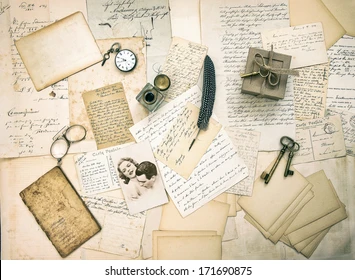
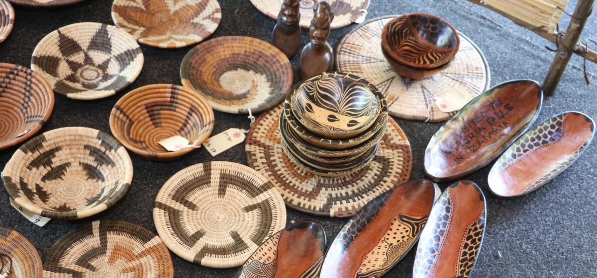
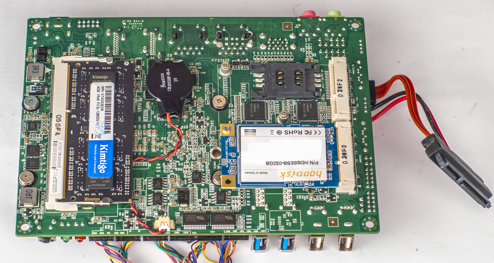
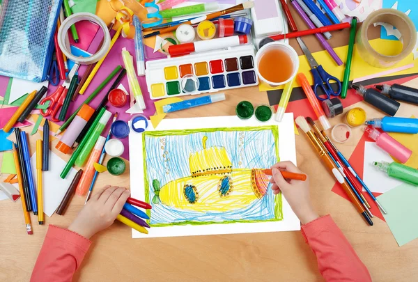
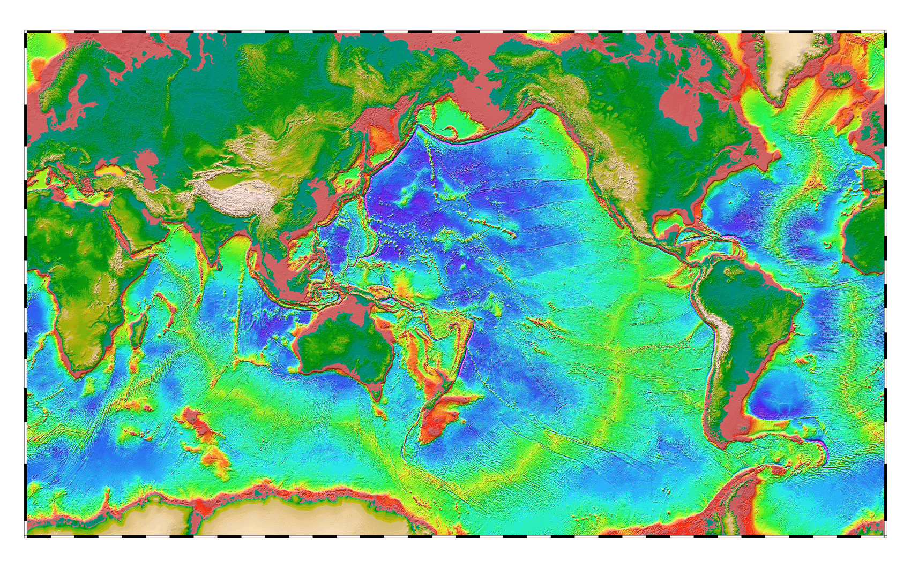
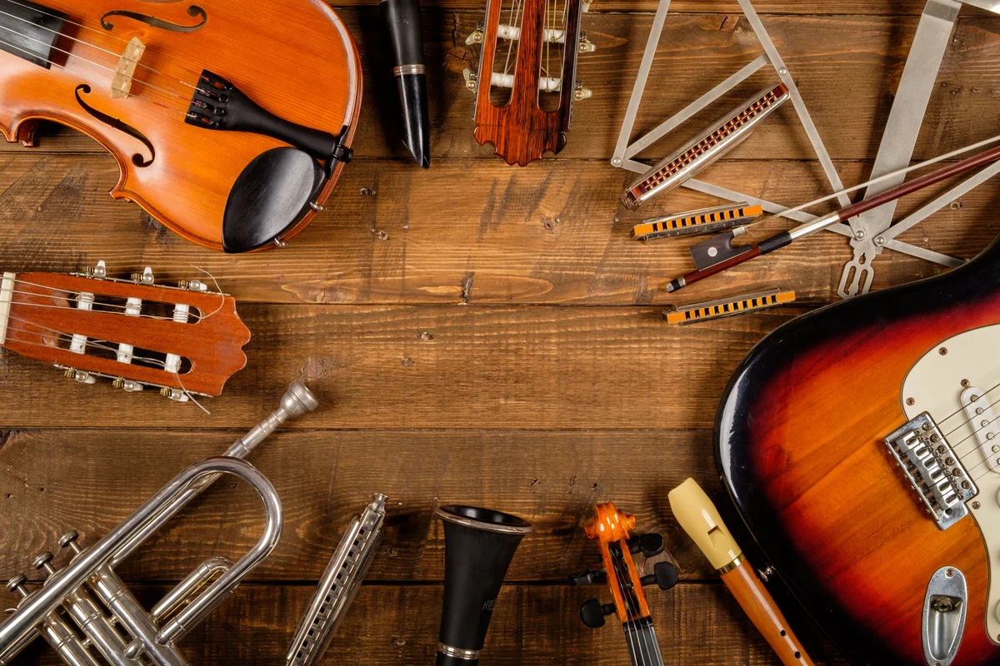

EA-PH-001
GLOBAL SEED COLLECTION
Seeds representing Earth's plant life and agricultural heritage.
REPRESENTS / WHAT GREW HERE
EARTH ARCHIVE
INTERSTELLAR PRESERVATION PROGRAM
MISSION EA-091
2091
ARCHIVE ALLOCATION // PENDING
When preservation has a cost,
how do we decide what deserves to survive?
STATUS / ALLOCATION PENDING
EARTH // HOME PLANET
EARTH ARCHIVE
INTERSTELLAR PRESERVATION PROGRAM
MISSION EA-091
2091
You have been selected for Mission EA-091.
In 2091, humanity is preparing its first permanent settlement beyond the Solar System.
The people born there may never see Earth.
They will know this planet through what YOU choose to send with them.
But space aboard the mission is limited.
Only a small allocation has been reserved for the Earth Archive.
You cannot preserve everything.
Every choice will take up space.
Every choice will leave something behind.
CHOOSE WHAT DESERVES THE SPACE.
PHYSICAL CARGO
25 KGDIGITAL STORAGE
10 TBBIOLOGICAL ARCHIVE
5 SLOTSEARTH ARCHIVE
INTERSTELLAR PRESERVATION PROGRAM
01 / 03
PHYSICAL ARCHIVE
AVAILABLE CAPACITY
25 KG01 / PHYSICAL
Objects, materials and traces of life on Earth must share a limited physical cargo.

EA-PH-001
Seeds representing Earth's plant life and agricultural heritage.
REPRESENTS / WHAT GREW HERE
WHAT'S INSIDE
Seeds from major food crops, wild plants, medicinal species and threatened flora, collected across Earth's climates and regions.
WHY IT MATTERS
Carries both the biological diversity of Earth's plant life and thousands of years of human cultivation.
MASS
8 KG
EA-PH-002
A frozen record of Earth's atmosphere and climate.
REPRESENTS / OUR PLANET'S MEMORY
WHAT'S INSIDE
Preserved Antarctic ice containing layers of snow, particles and ancient air trapped over thousands of years.
WHY IT MATTERS
A physical record of Earth's atmosphere and climate, written directly into the planet.
MASS
6 KG
EA-PH-003
Physical fragments of the planet itself.
REPRESENTS / THE PLANET WE INHERITED
WHAT'S INSIDE
Rock, soil, sand, clay, salt, minerals, volcanic glass and fossils collected from environments across Earth.
WHY IT MATTERS
Preserves the textures and substances of the planet beneath our feet.
MASS
6 KG
EA-PH-004
Materials transformed, engineered and created by humans.
REPRESENTS / THE PLANET WE ALTERED
WHAT'S INSIDE
Glass, steel, concrete, paper, plastic, ceramic, textiles and other transformed materials.
WHY IT MATTERS
Shows how humans transformed Earth's raw materials into the artificial world we built around ourselves.
MASS
6 KG
EA-PH-005
Ordinary objects from ordinary lives around the world.
REPRESENTS / HOW WE LIVED
WHAT'S INSIDE
Keys, glasses, cooking utensils, clothing, shoes, receipts, packaging, notebooks, photographs and household objects.
WHY IT MATTERS
History often remembers exceptional things. This collection preserves ordinary human life.
MASS
9 KG
EA-PH-006
Private thoughts written by people across generations.
REPRESENTS / WHAT WE FELT
WHAT'S INSIDE
Handwritten letters, diaries, postcards, notes and personal accounts from different ages, languages, countries and generations.
WHY IT MATTERS
Preserves love, boredom, grief, jokes, arguments, hopes and ordinary human thoughts.
MASS
3 KG
EA-PH-007
Objects shaped by human hands, skills and traditions.
REPRESENTS / WHAT OUR HANDS KNEW
WHAT'S INSIDE
Ceramics, woven textiles, carved objects, embroidery, baskets, hand tools and crafts from different regions.
WHY IT MATTERS
Preserves knowledge and techniques passed from one pair of hands to another across generations.
MASS
7 KG
EA-PH-008
The components behind the machines that transformed human life.
REPRESENTS / HOW WE BUILT
WHAT'S INSIDE
Smartphones from different generations, circuit boards, processors, cables, batteries, sensors, motors, screens and dismantled devices.
WHY IT MATTERS
Exposes the physical systems hidden inside the machines that transformed communication, work, travel and knowledge.
MASS
12 KG
EA-PH-009
Traces of childhood, learning, imagination and play.
REPRESENTS / HOW WE BEGAN
WHAT'S INSIDE
Toys, drawings, schoolwork, storybooks, games and handmade objects from children around the world.
WHY IT MATTERS
Preserves humanity before adulthood: learning, imagination, curiosity and play.
MASS
4 KG
EA-PH-010
A physical record of the world humanity inhabited.
REPRESENTS / THE WORLD WE INHABITED
WHAT'S INSIDE
Relief maps and records of continents, oceans, mountains, rivers, tectonic plates, ecosystems, climate zones, cities, populations, migration routes and political borders.
RECORDED
2091 — the archive's final record of Earth's physical and human geography before departure.
MASS
6 KG
EA-PH-011
Physical tools humans used to turn movement into music.
REPRESENTS / HOW WE MADE SOUND
WHAT'S INSIDE
Compact acoustic instruments and components representing strings, percussion, wind, keys and resonating materials.
WHY IT MATTERS
Digital files can preserve music. These objects preserve how human bodies physically created it.
MASS
10 KGEA-PH-012
Objects connected to the moments humans chose to mark together.
REPRESENTS / HOW WE GAVE LIFE MEANING
WHAT'S INSIDE
Objects, garments, decorations and records tied to weddings, funerals, births, coming-of-age ceremonies, festivals and seasonal traditions.
WHY IT MATTERS
Preserves the traditions humans created around birth, death, love, belonging, transformation and time.
MASS
8 KGEA-PH-013
Tools humans created to quantify and understand reality.
REPRESENTS / HOW WE MEASURED REALITY
WHAT'S INSIDE
A compass, mechanical clock, ruler, scale, thermometer, sextant and scientific measuring instruments from different periods.
WHY IT MATTERS
Preserves humanity's attempt to turn an immense and confusing universe into things we could compare and calculate.
MASS
7 KGEA-PH-014
The ingredients, tools and traditions through which humans ate together.
REPRESENTS / HOW WE ATE TOGETHER
WHAT'S INSIDE
Recipes, handwritten family cookbooks, menus, cooking utensils, spice samples, preserved ingredients and food traditions from around the world.
WHY IT MATTERS
Food carried geography, migration, memory, family, identity and tradition from one generation to another.
MASS
6 KGYOU MAY LEAVE SPACE UNUSED.
EARTH ARCHIVE
INTERSTELLAR PRESERVATION PROGRAM
02 / 03
DIGITAL ARCHIVE
AVAILABLE CAPACITY
10 TBARCHIVE CATEGORY 02
Earth produced more information than any archive could preserve. Select the knowledge, culture and digital traces that should survive the journey.